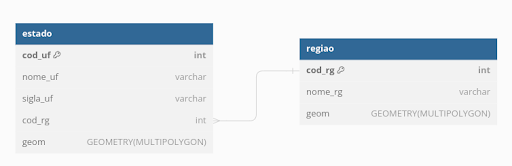

1. FUNDAMENTOS DE BANCOS DE DADOS#
Bancos de dados constituem ferramentas essenciais para o gerenciamento de dados, desempenhando um papel indispensável em setores variados, incluindo saúde, educação, comércio e tecnologia. Eles são projetados para organizar e armazenar significativos volumes de dados de forma estruturada ou não estruturada, facilitando o acesso e a manipulação de dados. A organização sistemática proporcionada por esses bancos é fundamental para assegurar a integridade e a exatidão dos dadoses, enquanto se protege contra acessos indevidos, reforçando a segurança dos dados.
No contexto do geoprocessamento, os bancos de dados são utilizados para armazenar, gerenciar e analisar dados geoespaciais, um tipo de dado que possui localização específica na superfície terrestre. Os bancos de dados espaciais são essenciais para organizar uma ampla variedade de dados relacionados ao espaço geográfico, como dados vetorias, dados matriciais e dados alfanuméricos. Estes bancos de dados permitem o armazenamento de dados em formatos que preservam e expressam a localização geográfica, as características e as relações espaciais entre os dados, como a proximidade ou a sobreposição entre diferentes elementos geográficos. Com capacidade de manipular dados espaciais, os usuários podem realizar análises complexas, como modelagem de terreno, análise de redes, planejamento urbano e rural, gestão de recursos naturais e estudos ambientais. Além disso, os bancos de dados espaciais facilitam a integração e o compartilhamento de dados geoespaciais entre diferentes plataformas e usuários, melhorando a colaboração em projetos de geoprocessamento. Esse tipo de banco de dados suporta a realização de consultas espaciais avançadas e a visualização de dados geográficos, que são fundamentais para a tomada de decisão com base em localização.
1.1 Breve histórico dos bancos de dados#
A evolução dos bancos de dados representa um marco significativo na história da tecnologia da informação. Inicialmente, os dados eram geridos por meio de sistemas de arquivos planos ou hierárquicos que apresentavam consideráveis limitações em flexibilidade e funcionalidade. Na década de 1960, ocorreram avanços notáveis com o surgimento do Modelo Hierárquico, exemplificado pelo Information Management System (IMS) da IBM, e do Modelo de Rede, ilustrado pelo Integrated Database Management System (IDMS). Esses modelos introduziram estruturas e relações mais definidas para a organização dos dados, embora persistissem desafios relacionados à escalabilidade e adaptabilidade.
A revolução nos bancos de dados ocorreu em 1970, quando Edgar F. Codd, um pesquisador da IBM, propôs o modelo relacional para bancos de dados. Esse modelo introduziu uma abordagem baseada em tabelas para armazenar dados, possibilitando relacionamentos complexos entre conjuntos de dados distintos. A estrutura tabular, acompanhada pela linguagem de consulta SQL (Structured Query Language), permitiu que os usuários acessassem e manipulassem dados de maneiras antes impossíveis. O modelo relacional não apenas facilitou a programação de aplicações de banco de dados, mas também tornou as operações de dados mais compreensíveis para os não especialistas, democratizando o uso de dados.
Durante as décadas de 1980 e 1990, o desenvolvimento de sistemas de gerenciamento de banco de dados relacional (SGBDR) como Oracle, Microsoft SQL Server, MySQL e PostgreSQL acelerou. Estes sistemas se tornaram onipresentes em empresas e organizações de todos os tamanhos, sustentando aplicações de negócios, sistemas de informações geográficas, serviços financeiros, entre outros. A robustez, a segurança e a capacidade de processar transações de maneira confiável e eficiente consolidaram a posição dos SGBDR como a espinha dorsal dos sistemas de informação corporativa.
O advento da internet e o consequente aumento exponencial na quantidade e variedade de dados gerados levaram a novos desafios, que os bancos de dados relacionais tradicionais lutavam para atender. Foi assim que, no início dos anos 2000, surgiu o movimento NoSQL, oferecendo uma variedade de sistemas de banco de dados que promoviam maior escalabilidade, flexibilidade de esquema e otimização para tipos específicos de operações. Essa nova geração de bancos de dados, como MongoDB, Cassandra e Neo4j, foi projetada para lidar com as grandes quantidades de dados semi-estruturados e não estruturados da Web 2.0, Big Data e aplicações de internet das coisas (IoT).
A década de 2010 marcou a ascensão dos bancos de dados em memória, como o SAP HANA e o Redis, que ofereciam processamento de dados em velocidades extraordinárias ao armazenar informações diretamente na RAM. Isso permitiu análises em tempo real e a aceleração de processos de negócios críticos. Paralelamente, a expansão do Big Data impulsionou o desenvolvimento de tecnologias como o Hadoop e o Spark, projetados para processar e analisar volumes massivos de dados de maneira distribuída e escalável.
A integração de capacidades de aprendizado de máquina e inteligência artificial (IA) em sistemas de gerenciamento de bancos de dados tornou-se um diferencial importante. Plataformas de dados começaram a incorporar algoritmos de IA para otimizar consultas, gerenciar recursos de forma mais eficiente e fornecer insights mais profundos a partir dos dados armazenados.
Atualmente, os serviços de banco de dados como serviço (DBaaS) ganharam popularidade, oferecendo às empresas a flexibilidade de escalar recursos de banco de dados sem a necessidade de gerenciar a infraestrutura subjacente. Soluções de DBaaS, oferecidas por provedores de nuvem como Amazon Web Services, Google Cloud e Microsoft Azure facilitaram a implementação, o gerenciamento e a escalabilidade de bancos de dados.
Ao mesmo tempo, a expansão do edge computing exigiu que os sistemas de banco de dados fossem capazes de operar eficientemente em ambientes distribuídos, tratando dados mais próximos de onde eles são gerados. Isso otimizou o desempenho de aplicações que dependem de latência baixa e tratamento local de dados, como em dispositivos IoT, veículos autônomos e aplicações de realidade aumentada.
A crescente preocupação com a segurança e a privacidade dos dados, amplificada por regulamentações como o GDPR (Regulamento Geral sobre a Proteção de Dados) na Europa, impulsionou o desenvolvimento de tecnologias avançadas de criptografia, anonimização de dados e técnicas de compliance. Bancos de dados modernos incorporaram essas funcionalidades para garantir a proteção dos dados dos usuários e a conformidade com leis de privacidade.
A tecnologia de blockchain, conhecida por sua aplicação em criptomoedas, encontrou usos inovadores em sistemas de banco de dados distribuídos, oferecendo imutabilidade, transparência e segurança reforçada para transações e armazenamento de dados. Essa integração prometeu transformar setores que dependem de registros inalteráveis, como finanças, cadeia de suprimentos e registros de propriedade.
A evolução dos bancos de dados reflete a adaptação às tendências tecnológicas emergentes, garantindo que as plataformas de dados permaneçam na vanguarda da capacidade de armazenamento, processamento e análise de informações.
1.2 Funcionalidades e uso dos bancos de dados#
A principal função de um banco de dados é armazenar dados de maneira organizada. Bancos de dados são projetados para manter uma grande quantidade de dados de maneira estruturada, permitindo que empresas e organizações armazenem registros de tudo, desde transações de clientes, informações de produtos, registros financeiros, até interações em redes sociais. Eles fornecem uma forma sistemática de armazenar dados em tabelas, documentos, grafos ou pares chave-valor, dependendo do tipo do banco de dados.
Os bancos de dados permitem a busca e a recuperação eficientes de dados. Usando linguagens de consulta, como Structured Query Language (SQL) para bancos de dados relacionais ou consultas específicas para sistemas NoSQL, o usuário pode realizar operações complexas de busca para encontrar registros específicos, tendências, ou padrões no banco de dados. As consultas podem variar desde a simples recuperação de um registro de cliente até análises complexas que cruzam múltiplas tabelas e condições.
Os bancos de dados também são responsáveis por gerenciar transações, que podem ser entendidas como sequências de operações realizadas como uma única unidade lógica de trabalho. Sistemas de banco de dados geralmente garantem propriedades ACID (Atomicidade, Consistência, Isolamento e Durabilidade) para transações, assegurando que todas as operações dentro de uma transação sejam concluídas com sucesso ou que nenhuma seja aplicada em caso de falha em qualquer etapa.
Com a análise de dados extraídos dos bancos de dados, é possível tomar decisões informadas e estratégicas. Os bancos de dados fornecem suporte para Business Intelligence (BI) e ferramentas de análise de dados que ajudam na interpretação de grandes volumes de dados. Por exemplo, a análise de dados de vendas pode ajudar a determinar quais produtos são os mais vendidos e em quais períodos do ano.
Os bancos de dados implementam várias camadas de segurança para proteger informações sensíveis e confidenciais. Controles de acesso, autenticação de usuários, criptografia e auditorias regulares são apenas algumas das medidas utilizadas para garantir que apenas usuários autorizados possam acessar ou modificar dados. Para garantir a integridade dos dados e a continuidade dos negócios, os bancos de dados oferecem soluções de backup e de recuperação. Isso permite que organizações recuperem dados em caso de perda de dados ou de dados corrompidos.
Os bancos de dados modernos são projetados para funcionar bem em ambientes distribuídos e integrados, possibilitando o compartilhamento de dados entre diferentes sistemas e aplicações. A integração de dados ajuda a proporcionar uma visão unificada dos dados corporativos.
Em síntese, os bancos de dados desempenham um papel crítico na infraestrutura tecnológica das organizações. Eles não são apenas repositórios de dados, mas também os pilares sobre os quais as decisões estratégicas são construídas. A capacidade de gerenciar eficientemente grandes volumes de dados com integridade, realizar análises aprofundadas e garantir a segurança dos dados são aspectos que tornam os bancos de dados indispensáveis. Ao mesmo tempo, a sua evolução contínua garante que novas demandas de processamento de dados sejam atendidas com inovação constante, garantindo que as empresas possam continuar a extrair valor dos seus ativos de dados e manter a resiliência em um ambiente de negócios que está sempre em transformação.
1.3 Tipos de banco de dados#
Existem diversos tipos e estruturas de bancos de dados disponíveis atualmente. Dentre eles, alguns dos mais conhecidos e utilizados são:
Bancos de Dados Relacionais (RDBMS)#
Os bancos de dados relacionais armazenam dados em tabelas, que são relacionadas entre si através de chaves primárias e estrangeiras. O modelo relacional utiliza a linguagem SQL para manipulação de dados e é conhecido pela sua solidez e facilidade de manutenção. Exemplos incluem MySQL, PostgreSQL e Oracle.
Bancos de Dados NoSQL#
O termo “NoSQL” se refere a “not only SQL”, indicando bancos de dados projetados para armazenar e recuperar dados que não requerem o modelo tabular dos bancos de dados relacionais. São ideais para dados não estruturados ou semi-estruturados e são conhecidos pela sua escalabilidade e performance em grandes volumes de dados. Exemplos de dados estruturados, semi-estruturados e não estruturados são apresentados na seçao 1.3.1 Os tipos incluem:
Bancos de Dados de Documentos: Armazenam dados em documentos, geralmente formatados em JSON ou XML. Exemplos: MongoDB, CouchDB.
Bancos de Dados de Chave-Valor: Cada item é armazenado como uma chave e um valor correspondente. Exemplos: Redis, DynamoDB.
Bancos de Dados de Colunas Largas: Otimizados para consultas em grandes conjuntos de dados distribuídos. Exemplo: Cassandra.
Bancos de Dados de Grafos: Com foco em armazenar entidades e seus relacionamentos interconectados. Exemplos: Neo4j, ArangoDB.
Bancos de Dados em Memória#
Estes bancos de dados utilizam a memória principal para armazenamento de dados, o que resulta em tempos de resposta extremamente rápidos. É ideal para aplicações que necessitam de leituras e gravações em tempo real. Exemplo: Redis, Memcached.
Bancos de Dados de Séries Temporais#
São otimizados para armazenar e recuperar sequências de dados ao longo do tempo. São frequentemente usados para monitoramento de sistemas, aplicações em IoT e dados financeiros. Exemplo: InfluxDB.
Data Warehouses#
Data warehouses são sistemas utilizados para relatórios e análises de dados e são considerados um componente crítico na inteligência de negócios. Eles são projetados para integrar dados de múltiplas fontes e suportar consultas complexas. Exemplos: Amazon Redshift, Teradata.
Bancos de Dados Distribuídos#
Distribuem os dados por diversos locais físicos, seja dentro da mesma rede ou através de redes geograficamente dispersas. Isso pode ser feito para redundância, performance ou ambos. Exemplos: CockroachDB, Cassandra.
Bancos de Dados Orientados a Objetos#
Armazenam informações na forma de objetos, como em linguagens de programação orientadas a objeto. Eles são úteis para aplicações que necessitam de complexas relações entre dados. Exemplo: db4o.
Bancos de Dados Multimodelo#
Estes bancos de dados suportam vários modelos de dados, como documentos, grafos e chave-valor, permitindo ao desenvolvedore escolher a melhor abordagem para cada situação. Exemplo: ArangoDB, OrientDB.
Cada tipo de banco de dados apresenta vantagens e desvantagens e é adequado para diferentes casos de uso. A seleção de um banco de dados geralmente depende de vários fatores, incluindo o tipo e o volume dos dados, as operações de consulta necessárias, performance, escalabilidade e consistência exigidas pelo sistema de aplicação.
1.3.1 Tipos de dados: estruturados, semi-estruturados e não estruturados#
Os dados podem ser classificados em estruturados, semi-estruturados e não estruturados, dependendo do grau de organização e da facilidade com que podem ser analisados e acessados por algoritmos. Aqui estão alguns exemplos concretos para ilustrá-los:
Dados estruturados
Os dados estruturados são aqueles organizados de forma clara e lógica, geralmente armazenados em tabelas com linhas e colunas bem definidas, facilitando a busca, o acesso e a análise dos dados. Eles seguem um modelo rígido, como um banco de dados relacional, onde cada tipo de informação (campo) é predeterminado e organizado de forma estruturada. Aqui estão alguns exemplos concretos:
Exemplos:
1. Bancos de Dados Relacionais:
São a forma mais comum de armazenamento de dados estruturados, onde os dados são organizados em tabelas. Cada tabela tem colunas (atributos) e linhas (registros).
Tabela de Clientes:
ClienteID |
Nome |
Telefone |
|
|---|---|---|---|
1 |
João Silva |
(11) 9999-9999 |
|
2 |
Maria Lima |
(21) 8888-8888 |
Tabela de Pedidos:
PedidoID |
ClienteID |
DataPedido |
ValorTotal |
|---|---|---|---|
1001 |
1 |
2023-03-15 |
500.00 |
1002 |
2 |
2023-03-16 |
300.00 |
Estas tabelas podem ser relacionadas através do ClienteID, permitindo consultas complexas e relatórios.
2. Planilhas Eletrônicas:
Similar aos bancos de dados, mas geralmente usadas para armazenamento de dados e análise em menor escala. As planilhas organizam os dados em células dentro de colunas e linhas, com a possibilidade de realizar cálculos e visualizações.
Planilha de Orçamento Familiar:
Mês |
Despesa |
Categoria |
Valor |
|---|---|---|---|
Janeiro |
Supermercado |
Alimentação |
R$ 600,00 |
Janeiro |
Conta de Luz |
Moradia |
R$ 200,00 |
3. Sistemas de Gestão de Cliente (CRM):
Sistemas CRM são exemplos de aplicativos que utilizam intensivamente dados estruturados para gerenciar informações sobre clientes, suas interações e históricos de compra.
Dados de Cliente no CRM:
ClienteID |
Nome |
Segmento |
ÚltimaCompra |
|---|---|---|---|
1 |
João |
Tecnologia |
2023-03-01 |
2 |
Maria |
Saúde |
2023-02-24 |
4. Sistemas de Recursos Humanos:
Bancos de dados de RH contêm informações detalhadas sobre funcionários, incluindo dados pessoais, histórico de emprego, salários e benefícios.
Tabela de Funcionários:
FuncID |
Nome |
Departamento |
Salário |
|---|---|---|---|
101 |
Ana |
Finanças |
R$ 7.000 |
102 |
Pedro |
TI |
R$ 9.000 |
Dados semi-estruturados
Os dados semi-estruturados não seguem uma estrutura rígida de banco de dados como tabelas SQL, mas ainda contêm tags ou outros marcadores para separar elementos semânticos e, portanto, podem ser mais facilmente analisados do que dados não estruturados. Eles são flexíveis e podem representar hierarquias de informações.
Exemplos:
JSON (JavaScript Object Notation): Muito usado em APIs web e configurações, o JSON organiza dados em um formato legível por humanos e máquinas, com estruturas de chave-valor que podem ser aninhadas.
{
"nome": "João Silva",
"idade": 30,
endereço": {
"rua": "Rua das Flores",
"cidade": "São Paulo",
"CEP": "01002-000"
}
}
XML (eXtensible Markup Language): Utilizado para armazenar e transportar dados, com uma estrutura de tags que define os elementos e os atributos dos dados.
<funcionario>
<nome>João Silva</nome>
<idade>30</idade>
<endereço rua="Rua das Flores" cidade="São Paulo" CEP="01002-000"/>
</funcionario>
YAML (YAML Ain’t Markup Language): Comumente usado para configuração de software, é mais legível para humanos e suporta dados em forma de listas e dicionários.
nome: João Silva
idade: 30
endereço:
rua: Rua das Flores
cidade: São Paulo
CEP: 01002-000
Emails: Os emails podem ser considerados semi-estruturados, pois possuem cabeçalhos padronizados (como De, Para, Assunto), mas o corpo da mensagem pode ser livre e não estruturado.
Dados não estruturados
Os dados não estruturados não possuem uma estrutura de dados predefinida, tornando-os mais difíceis de coletar, processar e analisar sem técnicas avançadas, como aprendizado de máquina. Eles compõem a maioria dos dados do mundo. A distinção entre dados semi-estruturados e não estruturados reside na existência de algum nível de organização e metadados que facilitam a interpretação dos dados. Enquanto os dados semi-estruturados mantêm uma certa ordem que facilita seu processamento, os dados não estruturados requerem métodos mais complexos para extrair informações úteis.
Exemplos:
Textos livres: Artigos, publicações em blogs, comentários em mídias sociais e livros digitais. Esses dados são ricos em informações, mas não seguem uma estrutura organizada.
Imagens e Vídeos: Fotos digitais, filmagens de vídeo, e transmissões ao vivo. Embora possam conter metadados semi-estruturados (como data, hora e localização), o conteúdo visual em si é não estruturado.
Áudios: Gravações de voz, músicas e outros sons. Informações como faixas de áudio e metadados podem ser semi-estruturados, mas o conteúdo de áudio é não estruturado.
Logs de sistemas: Embora possam ter formatos repetitivos, o conteúdo detalhado dentro de logs de sistemas varia amplamente e pode ser considerado não estruturado devido à sua natureza variável e à falta de um esquema fixo.
1.3.2 Escalabilidade em bancos de dados#
A escalabilidade de um banco de dados refere-se à sua capacidade de lidar com o aumento de carga de trabalho ou demanda sem comprometer o desempenho, mantendo ou até melhorando a eficiência do processamento à medida que mais recursos são necessários. Isso pode envolver o processamento de quantidades crescentes de dados, o atendimento a um número maior de usuários simultâneos ou ambos.
Existem dois tipos principais de escalabilidade:
Escalabilidade Vertical (Scale-up)
Refere-se ao processo de adicionar mais recursos a um único servidor ou nó para aumentar sua capacidade. Isso pode incluir a adição de CPUs mais rápidas, mais memória RAM, maior capacidade de armazenamento ou melhores dispositivos de E/S. A escalabilidade vertical é geralmente mais simples de implementar, pois não requer mudanças significativas na arquitetura do aplicativo ou do banco de dados. No entanto, ela tem um limite físico e financeiro; eventualmente, você atingirá o máximo que uma única máquina pode suportar ou se tornará proibitivamente caro adicionar mais recursos.
Escalabilidade Horizontal (Scale-out)
Refere-se ao processo de adicionar mais servidores ou nós ao sistema para distribuir a carga e os dados entre várias máquinas. Em contraste com a escalabilidade vertical, a horizontal permite que o sistema cresça quase indefinidamente, adicionando mais unidades conforme necessário. Isso é útil para sistemas distribuídos, como bancos de dados NoSQL (por exemplo, Cassandra, MongoDB) ou sistemas de banco de dados distribuídos SQL (como Google Spanner). A escalabilidade horizontal é mais complexa de gerenciar, pois requer sincronização entre os nós, balanceamento de carga e, em alguns casos, a reorganização dos dados para otimizar o desempenho e a disponibilidade.
1.4 Bancos de dados relacionais#
Os bancos de dados relacionais, fundamentados nos princípios da matemática relacional (para saber mais sobre matemática relacional, você pode consultar Schmidt, 2010), representam informações em tabelas, que são estruturas compostas por linhas e colunas. Cada tabela (também chamada de relação) é uma entidade que contém um conjunto de dados relacionados, onde as colunas representam os atributos dessa entidade, como nome, idade ou endereço, e as linhas representam registros individuais, ou seja, instâncias específicas da entidade. Esta estrutura é intuitiva e permite um tipo de acesso aos dados que é muito eficiente para diversas operações de consulta e atualização.
Um conceito importante no contexto dos bancos de dados relacionais é o de chaves primárias e estrangeiras, que estabelecem a integridade dos dados e as relações entre as tabelas. Uma chave primária é uma coluna ou um conjunto de colunas que identifica de maneira única cada linha da tabela. Em outras palavras, não pode haver dois registros com a mesma chave primária, o que garante a unicidade dos dados. Por outro lado, uma chave estrangeira é uma coluna em uma tabela que é a chave primária de outra tabela. As chaves estrangeiras são essenciais para manter as relações entre diferentes entidades no banco de dados, permitindo que uma tabela faça referência a outra. No modelo lógico simplificado da figura abaixo, temos duas tabelas: estado e região.

Na figura apresentada, a chave primária da tabela estado é cod_uf, o que significa que cod_uf identifica unicamente cada estado no banco de dados. Isso implica que cada estado terá um cod_uf exclusivo. Por sua vez, cod_rg é a chave primária na tabela região, identificando unicamente cada região. Além disso, cod_rg também atua como uma chave estrangeira na tabela estado, estabelecendo uma ligação direta entre cada estado e sua respectiva região. Isso permite que informações relacionadas a uma região sejam associadas a estados específicos, facilitando consultas relacionais que podem combinar dados de ambas as tabelas com base nessa relação. Essa estrutura promove a integridade referencial dentro do banco de dados, garantindo que os dados estejam consistentemente relacionados entre si e que as relações entre diferentes entidades sejam mantidas corretamente.
Os relacionamentos entre tabelas são categorizados principalmente em três tipos: um-para-um, um-para-muitos, e muitos-para-muitos:
Um-para-um: Cada linha em uma tabela está associada a uma e apenas uma linha em outra tabela. Por exemplo, uma pessoa pode ter apenas um passaporte, e cada passaporte é emitido para apenas uma pessoa.
Um-para-muitos: Uma linha em uma tabela pode estar associada a várias linhas em outra tabela, como um autor que escreveu vários livros, mas cada livro foi escrito por um único autor.
Muitos-para-muitos: Ocorre quando várias linhas em uma tabela podem se relacionar com várias linhas em outra tabela. Um exemplo seria alunos e disciplinas, onde alunos podem se matricular em várias disciplinas e cada disciplina pode ter vários alunos inscritos.
A capacidade de definir e manipular essas relações é o que dá aos bancos de dados relacionais sua potência e flexibilidade, permitindo realizar consultas complexas e o cruzamento de dados de maneiras diversas. Este modelo relacional é a base sobre a qual as operações de consulta, como junções (joins) e transações, são construídas, permitindo aos usuários acessar e combinar dados de tabelas relacionadas.
Os relacionamentos entre tabelas são categorizados principalmente em três tipos: um-para-um, um-para-muitos, e muitos-para-muitos. A capacidade de definir e manipular essas relações é o que dá aos bancos de dados relacionais sua potência e flexibilidade, permitindo realizar consultas complexas e o cruzamento de dados de maneiras diversas.
Além da estrutura de tabelas e dos conceitos de chaves primárias e estrangeiras, as principais características de um banco de dados relacional incluem:
Esquema Pré Definido: O esquema de um banco de dados relacional é definido antecipadamente, especificando as estruturas das tabelas, os tipos de dados das colunas, e as relações entre as tabelas.
Integridade de Dados: Os bancos de dados relacionais seguem regras estritas para garantir a integridade dos dados, como restrições de chave primária, restrições de chave estrangeira, restrições de domínio, e outras regras de negócio.
Operações baseadas em SQL: A SQL é usada para escrever consultas para inserir, atualizar, deletar e recuperar dados. Ela também permite a manipulação de estruturas de banco de dados e o controle de acesso aos dados.
Transações: Os bancos de dados relacionais permitem o agrupamento de várias operações em uma única transação, que segue as propriedades ACID (Atomicidade, Consistência, Isolamento, Durabilidade), garantindo que todas as operações de uma transação são concluídas com sucesso ou, em caso de erro, todas são revertidas.
Independência de dados: Os dados são independentes da aplicação, significando que as mudanças feitas na estrutura do banco de dados não devem afetar a capacidade da aplicação de acessar os dados.
Normalização: Os bancos de dados geralmente são normalizados, um processo que organiza as colunas e as tabelas de um banco de dados para minimizar a redundância dos dados e melhorar a integridade dos mesmos.
Acesso concorrente: Múltiplos usuários podem acessar e manipular os dados simultaneamente, enquanto o sistema de gerenciamento de banco de dados (SGBD) mantém a consistência e a sincronização.
Segurança: Recursos de segurança, como controle de acesso, autenticação, e permissões são incorporados para proteger contra acesso não autorizado aos dados.
1.4.1 Vantagens e desvantagens dos bancos de dados relacionais#
Os bancos de dados relacionais oferecem uma série de vantagens que consolidam a sua posição como uma escolha popular para o gerenciamento de dados. Entre as principais vantagens, destacam-se:
Integridade e Precisão dos Dados: Garantida pelo uso de chaves primárias e estrangeiras, essenciais para manter a integridade referencial entre as tabelas.
Facilidade de Uso: A linguagem SQL, utilizada para a manipulação dos dados, é amplamente conhecida e lógica, facilitando o aprendizado e a implementação.
Maturidade dos Sistemas: Os SGBDs relacionais foram desenvolvidos e aprimorados ao longo de décadas, resultando em sistemas robustos e confiáveis.
Flexibilidade: Permitem ser utilizados em uma diversidade de aplicações, capazes de realizar consultas e transações complexas.
No entanto, existem desvantagens importantes a serem consideradas:
Escalabilidade Horizontal: Pode ser um desafio adicionar mais servidores para lidar com o aumento de carga devido à complexidade das relações entre as tabelas.
Desempenho em Grandes Volumes de Dados: Os SGBDs relacionais podem enfrentar limitações significativas em cenários que exigem processamento rápido de grandes volumes de dados.
Rigidez do Esquema: Fazer mudanças no esquema de um banco de dados relacional pode ser complexo, exigindo manutenção cuidadosa e podendo levar a interrupções do serviço.
Estas considerações devem ser levadas em conta ao escolher a tecnologia de banco de dados mais adequada para projetos específicos, equilibrando as necessidades de integridade de dados e facilidade de uso com as demandas de escalabilidade e flexibilidade do esquema.
1.5 Modelagem de dados#
A modelagem de dados é uma etapa determinante no desenvolvimento de sistemas de informação, delineando a estrutura, as relações e o fluxo dos dados para armazenamento em bancos de dados. Esta fase não somente possibilita o armazenamento eficiente e a rápida recuperação de informações, mas também estabelece as bases para o desenvolvimento de aplicações capazes de manipular dados de maneira coesa e escalável, apoiando operações empresariais e a tomada de decisões de forma fiável.
Um modelo de dados bem projetado aprimora a realização de operações de banco de dados, como consultas e atualizações, otimizando o uso de recursos e diminuindo o tempo de resposta. Ao minimizar o consumo desnecessário de recursos e incrementar a velocidade das operações, o modelo de dados torna-se um componente essencial para a eficácia operacional e a eficiência do sistema.
Outro aspecto fundamental da modelagem de dados é a segurança das informações. O modelo deve incluir mecanismos de defesa contra acessos não autorizados, protegendo os dados contra ataques e assegurando sua integridade e confidencialidade. A adoção de medidas de segurança rigorosas é indispensável para preservar a segurança dos dados, um elemento chave em contextos onde a segurança da informação é prioritária.
Além disso, a capacidade de adaptação e a maleabilidade são atributos imprescindíveis em um modelo de dados. Um esquema eficaz deve ser capaz de acompanhar o crescimento no volume de dados e se ajustar a alterações nas necessidades empresariais sem requerer revisões substanciais. Simultaneamente, a normalização dos dados, uma prática realizada durante a modelagem, organiza as informações de forma a reduzir a duplicidade e aumentar a integridade, impondo regras e restrições que reforçam a estrutura subjacente do banco de dados. Tais características garantem que o sistema possa evoluir e se adequar às demandas do negócio, mantendo a consistência e a qualidade dos dados.
O processo de modelagem de dados envolve a identificação dos requisitos de dados, a representação destes requisitos através de modelos conceituais, lógicos e físicos, e a aplicação de metodologias de normalização para assegurar a integridade dos dados:
Levantamento de Requisitos: O primeiro passo é compreender os requisitos do negócio, os tipos de dados que serão armazenados e as relações entre esses dados.
Modelo Conceitual: Criar um modelo de alto nível que mostra as entidades importantes do negócio, seus atributos e relacionamentos, sem se preocupar com detalhes técnicos de implementação.
Modelo Lógico: Detalhar o modelo conceitual em uma estrutura mais técnica, definindo tabelas específicas, chaves primárias, chaves estrangeiras e outros elementos de banco de dados, ainda de forma independente de banco de dados específico.
Modelo Físico: Converter o modelo lógico para um modelo específico de banco de dados, considerando características do sistema de gerenciamento de banco de dados (SGBD) escolhido, como tipos de dados, índices e restrições de integridade.
Implementação: Criar o banco de dados usando o modelo físico como guia, o que inclui a definição das estruturas de armazenamento, a criação de tabelas, índices, procedimentos armazenados, triggers e outras construções necessárias.
Manutenção: O modelo de dados pode necessitar de ajustes e otimizações conforme os dados crescem e as necessidades de negócio evoluem.
1.6 Segurança de Dados#
A segurança dos dados é um aspecto crítico da gestão de bancos de dados. Visa proteger os dados contra acessos não autorizados, alterações indevidas, divulgação ou destruição. A importância da segurança de dados é destacada nos seguintes aspectos:
Controle de Acesso:#
Autenticação: Assegura que apenas usuários autorizados possam acessar o sistema de banco de dados, geralmente através de um nome de usuário e senha. Métodos mais sofisticados podem incluir autenticação de dois fatores ou biométrica.
Autorização e Permissões: Uma vez autenticados, os usuários devem ter permissões adequadas que definem o que eles podem e não podem fazer dentro do banco de dados. Isto é controlado por políticas de acesso e papéis que limitam as ações dos usuários a operações específicas sobre os dados.
Auditoria: Manter um registro de quem acessou o banco de dados e o que foi feito. Isso ajuda a detectar e investigar atividades suspeitas ou não autorizadas.
Criptografia de Dados:#
Em Trânsito: A criptografia de dados em trânsito protege os dados enquanto eles estão sendo transmitidos entre o cliente e o servidor, prevenindo que sejam interceptados e lidos por terceiros.
Em Repouso: A criptografia de dados em repouso protege os dados armazenados em discos, garantindo que mesmo se alguém obtiver acesso físico aos servidores ou mídias de armazenamento, eles não poderão ler os dados sem a chave de criptografia correta.
Medidas para Prevenir a Perda de Dados:#
Backup e Recuperação: Implementar procedimentos regulares de backup dos dados é importante para poder restaurá-los em caso de desastres como falhas de hardware, ataques cibernéticos ou desastres naturais. A estratégia de recuperação deve ser testada e atualizada regularmente.
Integridade dos Dados: Assegurar que os dados sejam consistentes e precisos ao longo de todo o ciclo de vida. Isso pode incluir restrições de integridade, procedimentos armazenados e gatilhos que ajudam a manter os dados válidos e livres de corrupção.
Replicação: Manter cópias dos dados em locais diferentes pode proteger contra a perda de dados devido a falhas localizadas. A replicação pode ser síncrona ou assíncrona, dependendo das necessidades de negócio.
Proteção contra Malware e Intrusões: Utilizar software antivírus e antimalware, além de firewalls e sistemas de detecção e prevenção de intrusões para proteger o banco de dados contra ameaças externas.
Gestão de Vulnerabilidades:#
Atualizações e Patches: Aplicar regularmente patches e atualizações ao software de banco de dados para corrigir vulnerabilidades conhecidas.
Análise de Vulnerabilidades e Testes de Penetração: Avaliar periodicamente o sistema de banco de dados em busca de vulnerabilidades e realizar testes de penetração para descobrir e corrigir pontos fracos.
1.7 Integridade e normalização de dados#
A integridade dos dados é uma parte fundamental da qualidade do banco de dados, garantindo que os dados sejam precisos, confiáveis e acessíveis conforme a necessidade. Existem várias formas de integridade de dados, incluindo integridade de entidade, referencial, de domínio e de usuário, cada uma garantindo que os dados estejam corretos e úteis. Manter a integridade dos dados é essencial por vários motivos:
Confiabilidade: Os dados precisam ser confiáveis para apoiar a tomada de decisões. Decisões baseadas em dados incorretos podem levar a resultados indesejáveis.
Consistência: Os dados devem ser consistentes em todo o banco de dados. Inconsistências podem causar confusão e levar a decisões errôneas.
Conformidade: Muitas indústrias têm regulamentos que exigem a integridade dos dados, e falhar em manter essa integridade pode resultar em multas e outras penalidades.
Para manter a integridade dos dados, uma técnica importante é a normalização de banco de dados, um processo sistemático usado para minimizar a redundância de dados e garantir a dependência lógica. Isso é feito dividindo um banco de dados em partes menores chamadas tabelas e definindo relações entre elas. As etapas da normalização são chamadas de formas normais e geralmente vão da primeira à quinta forma normal, cada uma com regras mais estritas:
Primeira Forma Normal (1NF): Exige que os valores em cada coluna de uma tabela sejam atômicos, o que significa que não deve haver grupos ou listas de valores. Além disso, cada registro deve ser único.
Segunda Forma Normal (2NF): Além de atender aos critérios da 1NF, a tabela deve garantir que todos os atributos que não são parte da chave primária dependam de toda a chave primária para a sua existência, eliminando assim a redundância funcional parcial.
Terceira Forma Normal (3NF): Uma tabela atende a 3NF se atender a 2NF e todos os seus atributos não-chave forem mutuamente independentes da chave primária (ou seja, não deve haver dependências transitivas).
Forma Normal de Boyce-Codd (BCNF): É uma versão mais forte da 3NF. Uma tabela está na BCNF se, para cada uma de suas dependências funcionais, a esquerda é uma superchave.
Quarta e Quinta Forma Normal: Tratam de questões mais complexas de dependências multivaloradas e dependências de junção, respectivamente, que são mais complexas do que as situações abrangidas pelas formas normais anteriores.
A normalização ajuda a manter a integridade dos dados ao eliminar a redundância, o que reduz o risco de inconsistências. No entanto, a normalização extrema pode levar a uma quantidade excessiva de tabelas relacionadas, o que pode complicar as consultas e degradar o desempenho. Portanto, os projetistas de banco de dados muitas vezes procuram um equilíbrio entre a normalização para garantir a integridade dos dados e a desnormalização para otimizar o desempenho.
1.8 Sistemas de gerenciamento de banco de dados#
Um Sistema de Gerenciamento de Banco de Dados (SGDB ou DBMS, do inglês Database Management System) é um software que facilita a criação, manutenção e utilização de bancos de dados. Ele serve como uma interface entre o banco de dados e os usuários ou as aplicações que o utilizam, garantindo que os dados sejam organizados de forma eficaz e possam ser acessados, manipulados e atualizados de maneira segura e rápida. Abaixo, apresentamos alguns dos componentes e funcionalidades chave de um DBMS:
Interface de Usuário: Fornece uma maneira para os usuários interagirem com os dados no banco de dados, seja através de uma interface gráfica (GUI) ou uma interface de linha de comando (CLI).
Mecanismo de Armazenamento: Gerencia o armazenamento físico dos dados em dispositivos de armazenamento, como discos rígidos ou SSDs.
Mecanismo de Consulta: Permite que os usuários e aplicações recuperem dados do banco de dados usando uma linguagem de consulta, como SQL.
Manipulação de Dados: Facilita a inserção, atualização, e exclusão de dados no banco de dados.
Gerenciamento de Transações: Garante a consistência e a integridade dos dados ao gerenciar transações, o que é importante em ambientes multiusuário.
Controle de Acesso: Controla quem pode acessar o banco de dados e que operações podem ser realizadas.
Recuperação e Backup: Fornecem mecanismos para proteger os dados contra falhas do sistema e permitir a recuperação de dados em caso de erros ou desastres.
Indexação e Otimização de Consultas: Melhoram o desempenho das consultas através da criação de índices e otimização de planos de consulta.
Integridade de Dados e Conformidade: Garantem que os dados atendam a certos critérios de qualidade e conformidade através de regras de integridade referencial e outras restrições.
Metadados: Mantém informação sobre a estrutura do banco de dados, tipos de dados, restrições e relacionamentos entre os dados.
Os Sistemas de Gerenciamento de Bancos de Dados Relacionais (SGBDRs) mais populares atualmente incluem:#
Oracle Database: Altamente reconhecido em empresas de grande porte, oferece recursos extensivos para computação em nuvem, armazenamento de dados, e várias outras funcionalidades de alto desempenho.
MySQL: Muito popular no desenvolvimento de aplicações web, é conhecido pela sua facilidade de uso e eficiência. É uma escolha padrão em muitos ambientes de hospedagem web.
Microsoft SQL Server: Vantajoso em ambientes que utilizam outros produtos Microsoft, oferece excelente integração com ferramentas como o Microsoft Azure e serviços baseados em .NET.
PostgreSQL: Conhecido por seu suporte avançado a padrões SQL e por características como o suporte a tipos de dados complexos e a extensibilidade.
SQLite: Utilizado em uma ampla variedade de aplicações devido à sua natureza leve e sem servidor, é popular para dispositivos móveis e aplicações desktop de pequena escala.
IBM Db2: Frequentemente utilizado em grandes corporações e sistemas financeiros para processamento de transações de alta velocidade e data warehousing.
A escolha de um SGBD pode variar de acordo com as necessidades específicas de uma organização ou projeto, como requisitos de desempenho, confiabilidade, escalabilidade e suporte da comunidade.
1.8.1 O SGBD PostgreSQL#
Em nosso curso, iremos utilizar o PostgreSQL e sua extensão espacial, o PostGIS. O PostgreSQL é um sistema de banco de dados relacional de código aberto, que oferece suporte tanto a consultas SQL (relacionais) quanto a JSON (não relacionais). Com mais de 20 anos de desenvolvimento pela comunidade de código aberto, o PostgreSQL destaca-se pela sua estabilidade. Ele é amplamente utilizado como banco de dados principal para diversas aplicações web, além de aplicações móveis e de análises, consolidando-se como uma escolha robusta e versátil no gerenciamento de dados (POSTGRESQL, 2023).
O PostgreSQL originou-se como uma iniciativa acadêmica na Universidade da Califórnia em Berkeley na década de 1980, inicialmente chamado POSTGRES, e evoluiu para ser um dos sistemas de gerenciamento de banco de dados amplamente adotados no mundo, sustentado por uma comunidade ativa e uma arquitetura escalável. Sua versatilidade no manuseio de uma gama de operações, de consultas simples a complexas e grandes conjuntos de dados, faz dele uma opção preferencial para variados tipos de aplicações, desde projetos individuais a soluções empresariais de grande escala.
Distinguindo-se por seu suporte extensivo a tipos de dados avançados e funcionalidades programáveis, o PostgreSQL não se limita a tipos de dados convencionais, mas inclui suporte para arrays, JSON, XML e tipos geométricos, adequando-se a aplicações com necessidades de manipulação de dados complexos. Suas capacidades de customização por meio de funções, gatilhos e tipos de dados definidos pelo usuário permitem a adaptação às exigências específicas de desenvolvimento. A gestão de concorrência multiversão assegura a integridade dos dados sob diversas transações simult